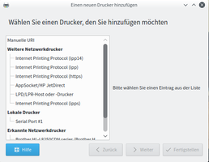
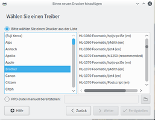
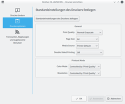
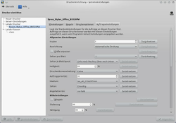
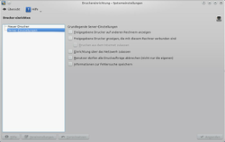

KDE Druckerkonfiguration
Dieser Artikel wurde für die folgenden Ubuntu-Versionen getestet:
Ubuntu 16.04 Xenial Xerus
Ubuntu 14.04 Trusty Tahr
Zum Verständnis dieses Artikels sind folgende Seiten hilfreich:
Benutzer und Gruppen verwalten, optional
Zum Drucken nutzt Plasma das Common Unix Printing System, kurz CUPS. Dadurch stehen Drucker allen Anwendungen zur Verfügung. Zur Konfiguration bietet KDE Programme, mit denen Drucker eingerichtet, verwaltet und im Netzwerk anderen Computern zur Verfügung gestellt werden können, ohne sich mit Serverdiensten beschäftigen zu müssen.
|  |  |
| Neuer Drucker | Druckerdatenbank / PPD-Datei |
Drucker installieren¶
Sofern der CUPS-Druckdienst und die Treiber auf dem Rechner installiert und eingerichtet sind - was normalerweise schon direkt nach der Installation der Fall ist - so ist es an der Zeit, den Drucker selbst in Betrieb zu nehmen. Sobald ein Drucker über USB mit dem Rechner verbunden, wird versucht diesen automatisch zu konfigurieren. Sollte dies nicht erfolgreich sein, muss ggf. der Drucker manuell eingerichtet werden. Die Druckerverwaltung findet man unter "Systemeinstellungen -> Drucker".
Neue Drucker lassen sich über die Schaltflächen "Neuer Drucker" hinzufügen. Schritt für Schritt wird man durch die Installation geführt. Zuerst muss der verwendete Anschluss gewählt werden. Wurde ein Netzwerkdrucker oder ein lokal über USB angeschlossener Drucker erkannt, taucht dieser in der Liste auf. Alternativ kann ein Drucker bspw. über IPP oder "Windows Printer via SAMBA" (siehe Windows-Freigabe einbinden) installiert werden.
Linux bringt für viele Drucker bereits den passenden Treiber mit. Aus der Liste wählt man den Hersteller seines Druckers aus und  auf "Weiter". Danach sucht man, ob der verwendete Drucker in der Datenbank vorhanden ist, wählt diesen aus und auf "Weiter". Alternativ, falls der Drucker nicht automatisch unterstützt wird, klickt man auf "Zurück" und benötigt in diesem Fall eine PPD-Datei, über die der passende Treiber installiert wird (siehe nächster Abschnitt). Im letzten Schritt werden die üblichen Daten ("Druckername", "Beschreibung" und "Standort") abgefragt und die Konfiguration ist abgeschlossen.
auf "Weiter". Danach sucht man, ob der verwendete Drucker in der Datenbank vorhanden ist, wählt diesen aus und auf "Weiter". Alternativ, falls der Drucker nicht automatisch unterstützt wird, klickt man auf "Zurück" und benötigt in diesem Fall eine PPD-Datei, über die der passende Treiber installiert wird (siehe nächster Abschnitt). Im letzten Schritt werden die üblichen Daten ("Druckername", "Beschreibung" und "Standort") abgefragt und die Konfiguration ist abgeschlossen.
Drucker installieren mit PPD-Datei¶
Hinweis:
Nur Mitgliedern der Gruppe lpadmin wird diese Aktion gestattet. Dies ist automatisch der erste bei der Installation angelegte Benutzer. Weiteren Benutzern muss dieses Recht erst gegeben werden [1].
Es kann vorkommen, dass der benötigte Druckertreiber nicht in Ubuntu enthalten ist. Manche Hersteller bieten PPD-Dateien für ihre Druckern an. Diese Dateien kann man als Druckertreiber bezeichnen. Das Vorgehen der Installation ist identisch zum oben beschriebenen, mit dem einzigen Unterschied, dass kein Druckerhersteller aus der Datenbank gewählt werden darf, sondern über den Punkt "PPD-Datei bereitstellen" der Treiber hinzugefügt werden muss.
Windows-Freigabe einbinden¶
Wenn im Netzwerk ein Windows-Rechner als Druckserver dient, muss man den Drucker im KDE-Druckerdialog zuerst über "Neuen Drucker" erstellen. Anschließend wählt man im erscheinenden Dialog "Windows Printer via SAMBA" und trägt rechts den Pfad zum Drucker ein oder navigiert über die Schaltfläche "Durchsuchen" zur Freigabe. Zusätzlich müssen ggf. die benötigten Zugangsdaten ("Benutzername" und "Passwort") gesetzt werden. Falls die Meldung "NT_STATUS_ACCESS_DENIED" erscheint, wurden ungültige Zugangsdaten angegeben. Die nachfolgenden Schritte sind identisch zur oben beschriebenen Installation. Weitere Informationen zu Windows Netzwerkdruckern sind im entsprechenden Artikel zu finden.
|  |
| Druckereinrichtung (Kubuntu 16.04) |
|  |
| Druckereinrichtung (Ubuntu 12.04) |
Druckereinrichtung¶
Bis einschließlich Ubuntu 12.10 findet man in der Baumansicht auf der linken Seite unter "Lokale Drucker" bzw. "Lokale Klassen" alle am System angeschlossenen Drucker / -klassen. Hier lassen sich alle Details des Druckers regeln. Unter "Einstellungen" sind allgemeine Angaben wie Druckername, Freigabe oder Aktivität zu finden. Im Reiter "Regeln" können Trennseiten aktiviert werden, die je nach Einstellung vor und/oder nach dem gedruckten Dokument ausgegeben werden soll. Zusätzlich können Berechtigungen für einzelne Benutzer gesetzt werden, die dem Benutzer das Drucken explizit erlauben oder verbieten. In den "Druckeroptionen" können druckerspezifische Einstellungen wie bspw. die Seiteneinstellungen und der Druckmodus vorgenommen werden. Des Weiteren können unter "Auftragseinstellungen" zahlreiche Standardkonfigurationen für Druckaufträge definiert werden. Mit Ubuntu 13.04 wurde die Konfigurationsoberfläche überarbeitet. Alle zuvor genannten Optionen sind durch auf "Einrichten" erreichbar.
Druckerklassen¶
Wenn man länger auf der Schaltfläche "Drucker hinzufügen" gedrückt hält und anschließend "Eine Druckerklasse hinzufügen" wählt, können bereits installierte Drucker zu einer Gruppe zusammengeschlossen werden. Dies hat den Vorteil, dass hierdurch die gruppierten Drucker gemeinsam verwaltet und Eigenschaften global für alle gemeinsam vorgenommen werden können.
|  |
| Server-Einstellungen bis Ubuntu 12.10 |
Server-Einstellungen¶
Automatisch Drucker im Netzwerk einbinden¶
Wenn im Netzwerk ein Linux-Rechner als Drucker-Server dient, kann man diesen per "Server-Einstellungen -> Freigegebene Drucker auf anderen Rechnern anzeigen" erkennen lassen. Diese Option aktiviert das "Browsing" des lokalen CUPS-Servers. Dadurch werden automatisch alle Drucker anderer Rechner, die im Netzwerk freigegeben sind, eingebunden.
Lokalen Drucker im Netzwerk freigeben¶
Solle ein lokal installierter Drucker über das Netzwerk anderen Rechnern zur Verfügung gestellt werden, so kann man die Option "Server-Einstellungen -> Freigegebene Drucker anzeigen, die mit diesem Rechner verbunden sind" aktivieren. Von nun an können andere Rechner über den Druckserver auf den freigegebenen Drucker zugreifen.
Administration über entfernte Rechner¶
CUPS lässt sich auch über das Netzwerk administrieren. So kann man sich über einen entfernten Rechner zum CUPS-Server verbinden und so Drucker einrichten oder neue Drucker hinzufügen, die gar nicht am eigenen Rechner angeschlossen sind. Hierzu muss CUPS über "Server-Einstellungen -> Einrichtung über das Netzwerk zulassen" aktiviert werden.
Links¶

 - Artikel in der KDE UserBase
- Artikel in der KDE UserBase- Erstellt mit Inyoka
-
 2004 – 2017 ubuntuusers.de • Einige Rechte vorbehalten
2004 – 2017 ubuntuusers.de • Einige Rechte vorbehalten
Lizenz • Kontakt • Datenschutz • Impressum • Serverstatus -
Serverhousing gespendet von